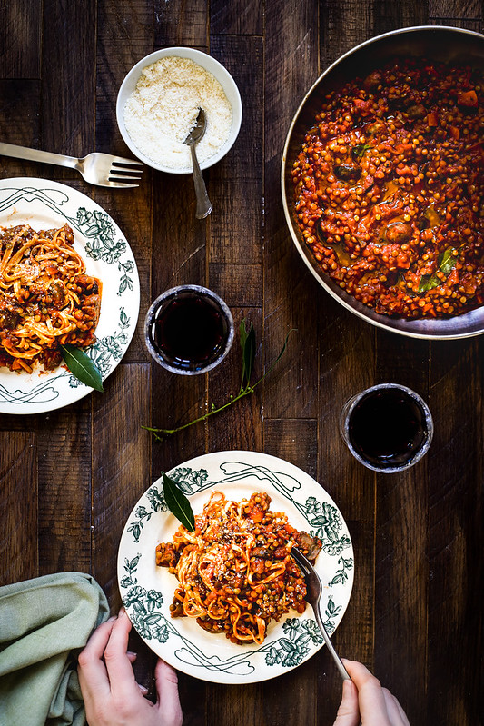

Pates a la bolognaise vegetale

Description
On pourrait parler de ragù de lentilles et de champignons si on etait des petits fous
mais nous ne sommes pas obliges d'arriver a de tels extremites.
Ingredients pour cette somptueuse recette
- lentilles, n'importe lesquelles sauf des corails
- des champignons de Paris, ou des cepes meme surgelees
- du trio de légumes typiques du soffritto italien : oignon, carotte, céleri
- sauce tomate : concassée (polpa) ou coulis (passata).
- concentré de tomate
- de l'ail
- piment
- huile d'olive vierge extra
Peites astuces pour rendre savoureuses ces petites lentilles
- faire cuire les champignons a part
- bien faire revenir les legumes avant d'ajouter la sauce tomate, et on peut mettre de la sauce soja
- bien faire reposer la sauce
- enrober les pates de sauce en les plongeant dedans
Instructions
- Verser les lentilles dans une casserole moyenne. Y verser trois fois le volume d'eau (30 cl environ). Porter à frémissement (sans saler) et laisser cuire 30 à 40 minutes. Les égoutter et les saler.
- Pendant ce temps, laver rapidement les champignons, couper le bas et les couper en deux ou en quatre selon la grandeur.
- Faire chauffer 4 càs d'huile dans une large poêle ou une sauteuse avec la gousse d'ail coupée en deux. Y ajouter les champignons, saler et les faire sauter une dizaine de minutes à feu moyen (en surveillant !) de manière à ce qu'une partie de leur eau s'évapore. Baisser le feu et laisser cuire encore une vingtaine de minutes afin que les champignons deviennent fondants.
- Pendant ce temps, laver et couper la carotte en dés, de même pour le céleri et enfin éplucher et émincer l'oignon.
Pendant ce temps, dans une large sauteuse ou casserole, chauffer 4 càs d'huile puis ajouter le piment, l'oignon, la carotte et le céleri. Les faire sauter au moins 5 minutes (voir un peu plus) puis ajouter les lentilles, le concentré de tomates; la sauce soja et le laurier. Laisser cuire 5 minutes puis verser la sauce tomate, saler.
- Laisser mijoter doucement 30 minutes (sans couvrir, la sauce doit épaissir et se concentrer), puis ajouter les champignons et laisser cuire encore 5 minutes. Saler et retirer le laurier.
- Porter à ébullition dans une casserole une grande quantité d'eau puis la saler. Y plonger les pâtes (la cuisson est très rapide), les égoutter puis assaisonner avec le ragù végétal en les plongeant dedans (c'est important pour les enrober !).
- Servir chaud avec un filet d'huile et si l'on souhaite du parmesan râpé.